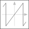

wrapAngleWrap angle to interval ]-pi,pi] or [0,2*pi[ |

|
This information is part of the Modelica Standard Library maintained by the Modelica Association.
This function wraps the input angle u to the interval ]-pi,pi], if positiveRange == false.
Otherwise the input angle u is wrapped to the interval [0,2*pi[.
| u |
Type: Angle (rad) Description: Input angle |
|---|---|
| positiveRange |
Default Value: false Type: Boolean Description: Use only positive output range, if true |
| y |
Type: Angle (rad) Description: Wrapped output angle |
|---|